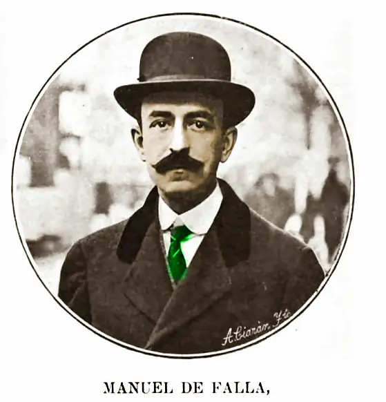

The atlas
Composers
71 composers in seven chapters, ordered by year of birth. Or browse every work in the Concert Hall.
The Baroque
1600–1750
François Couperin
He played for Louis XIV on Sundays and taught the harpsichord to speak through a held note, a trill and a well-placed silence.
Antonio Vivaldi
He wrote concertos for the women of Venice’s Pietà, operas for its theatres, and a barking dog for the viola.
Jean-Philippe Rameau
He explained the roots of chords in a treatise, then sent them through hell in his first opera, at fifty.
Johann Sebastian Bach
He supplied Leipzig’s churches with music for twenty-seven years and left keyboard players enough work for a lifetime.
George Frideric Handel
He filled London theatres with Italian opera, then put an English-speaking chorus at the centre of the drama.
Domenico Scarlatti
A royal teacher whose sonatas send the hands flying across the keyboard, then bring them together for a song.Classical
1750–1827
Carl Philipp Emanuel Bach
Frederick the Great’s accompanist wrote keyboard music that breaks off mid-sentence and makes a single note tremble.
Joseph Haydn
He could empty an orchestra one player at a time, or keep a quartet going after everyone thought the piece had ended.
Wolfgang Amadeus Mozart
In his operas a servant can outwit a count; in his concertos the piano can interrupt before the orchestra has finished its opening sentence.
Ludwig van Beethoven
He could make a symphony out of four notes, and spent his last years finding things four string players had never said.Romanticism
1815–1890
Gioachino Rossini
He made a roomful of quarrelling people sing like clockwork, then gave William Tell an orchestra of mountains and storms.
Franz Schubert
At seventeen he set a spinning wheel turning under Gretchen’s voice; at thirty-one he could make two cellos sing as if they had always belonged together.
Hector Berlioz
He could make an orchestra thunder, and knew when to leave a single cor anglais calling into silence.
Fanny Hensel
She ran Berlin’s Sunday concerts, wrote more than 450 works, and put her own name on published collections only in the last year of her life.
Felix Mendelssohn
At sixteen, he made eight string players sound like the most exhilarating orchestra in Europe.
Frédéric Chopin
He brought the opera singer’s breath and the mazurka’s wayward accents to a piano that could whisper across a room.
Robert Schumann
A bookseller’s son who put lovers, masks and arguments into piano music, and made criticism a form of friendship.
Franz Liszt
He could fit an orchestra under ten fingers, then end a lifetime at the piano with a few notes left hanging in the air.
Giuseppe Verdi
He could make a catchy tenor tune sound like a death sentence simply by letting the wrong man hear it.
Richard Wagner
He hid the orchestra beneath the stage at Bayreuth and taught it to remember everything his characters wanted to forget.
Clara Schumann
‘It is the air I breathe,’ she wrote of making music, after forty years on the concert platform.
Anton Bruckner
He spent half his life learning his trade, then wrote symphonies in which a horn call can grow into a wall of brass.
Johannes Brahms
He kept his First Symphony waiting until he was forty-three, then began the Second beside an Austrian lake the next summer.
Georges Bizet
A factory worker sings that love obeys no law. Beneath her voice, four bass notes keep the dance going.
Modest Mussorgsky
He could make a singer sound like a frightened child, a drunken monk or a tsar who can no longer bear his own thoughts.
Pyotr Ilyich Tchaikovsky
He could make a ballroom glitter, then let one unguarded melody tell us who was unhappy there.
Antonín Dvořák
He had played viola in the opera pit for nine years before the world discovered the composer of the <i>Slavonic Dances</i>.
Edvard Grieg
The Bergen merchant’s son who put Norwegian fiddle tunes, a troll king and a wedding party into concert-hall music.
Nikolai Rimsky-Korsakov
He became a professor before he could write counterpoint, then built Russian fairy-tale operas around an orchestra he knew instrument by instrument.Fin de siècle
1880–1918
Leoš Janáček
He wrote down the voices of strangers in Brno, then gave opera some of its most painfully recognisable people.
Edward Elgar
He made the <i>Enigma Variations</i> from his friendships and preserved his own way with the music on gramophone records.
Giacomo Puccini
He could make a whole theatre wait with a woman at a window, then break its heart with a tune it had heard before.
Gustav Mahler
A conductor who composed in the summers, and wanted each symphony to hold a whole world — the sublime and the street band together.
Richard Strauss
The son of a horn player, he gave the orchestra a taste for scandal and the soprano some of her longest, loveliest farewells.
Jean Sibelius
He watched sixteen swans circle over Ainola, gave their flight to the horns, and spent four years getting the Fifth Symphony right.
Amy Beach
A New Hampshire prodigy taught herself the orchestra from the Boston Symphony’s concerts, then gave Boston a symphony built on Irish tunes.
Alexander Scriabin
He wrote a part for coloured light that had to be omitted at the work’s first performance.
Sergei Rachmaninoff
In exile he earned his living at the piano, while the bells of his Russian childhood kept sounding through the music he wrote.The French Line
1870–1937
Camille Saint-Saëns
A pianist at ten and an organist for twenty years, he wrote the Organ Symphony, a dance of skeletons with a xylophone, and a zoo he forbade anyone to print.
Gabriel Fauré
He spent his days at the organ and in the classroom, saving for songs and chamber music the harmonies nobody else could quite imagine.
Claude Debussy
He trusted his ear over the rules — “pleasure is the law” — and made the piano, the flute and the orchestra sound new.
Erik Satie
The composer of the <i>Gymnopédies</i> asked pianists to prepare for 840 repetitions with ‘serious immobilities’.
Maurice Ravel
He made a ballet from two tunes and a snare drum, and gave his war dead a suite of dances.
Manuel de Falla
He took a Cádiz ear to Paris, learnt from Dukas and Debussy, and brought Andalusian song and the guitar into the orchestra.
Lili Boulanger
At nineteen she won the Prix de Rome; before her death at twenty-four she had written songs of lost love and psalms that shake the room.
Francis Poulenc
The pianist who wanted butter in the sauce wrote prayers, love songs and an opera in which a guillotine silences the choir.Modernism
1908–1945
Ralph Vaughan Williams
He wrote down an Essex folk song in 1903, edited the English Hymnal and carried a Tudor psalm tune into the concert hall.
Charles Ives
He sold life insurance in New York and wrote music in which a hymn across the river could outlast a whole marching band.
Arnold Schoenberg
He removed the home key from music, kept learning from Bach and Brahms, and found room for a minuet among all twelve notes.
Béla Bartók
He heard a future for concert music in village songs, and went out with a phonograph to learn how they were sung.
Igor Stravinsky
He could make a roomful of dancers lose their footing with one displaced accent, then write a psalm that scarcely moves.
Anton Webern
He passed melodies from horn to clarinet to cello, making a whole phrase out of sounds that each instrument could hold for only a moment.
Alban Berg
He gave an exploited soldier a voice in <i>Wozzeck</i> and fitted a Bach chorale into a twelve-note concerto in memory of Manon Gropius.
Florence Price
She put the juba dance and the brass hymn at the centre of the American symphony.
Sergei Prokofiev
He gave <i>Romeo and Juliet</i> its singing strings and the piano some of the twentieth century’s sharpest teeth.
George Gershwin
He carried Broadway’s rhythmic snap into the concerto, and made a clarinet slide the calling card of American concert music.
Aaron Copland
A Brooklyn modernist gave America its open fifths, its cowboy dances and a fanfare slow enough to let the brass ring.
Dmitri Shostakovich
He wrote fifteen symphonies under Soviet rule and signed some of his most personal music with four notes: D–E♭–C–B.After 1945
1945–present
Olivier Messiaen
For sixty years he played the organ at La Trinité, while birdsong and Yvonne Loriod’s piano carried his music far beyond the church.
John Cage
He put bolts between piano strings, composed with chance operations, and gave the sounds around a concert four minutes and thirty-three seconds of their own.
Benjamin Britten
He wrote Grimes and Aschenbach for Peter Pears, an arkful of animals for Suffolk children, and a requiem that lets dead soldiers speak.
György Ligeti
His orchestras hide dozens of moving parts inside one sustained sound, while his piano études set the hands running on different clocks.
Pierre Boulez
He wrote music of explosive attacks and lingering echoes, and built the ensembles, concert series and laboratories it needed.
Morton Feldman
He wrote a string quartet that can last six hours, and made a softly struck piano note worth waiting for.
György Kurtág
His <i>Játékok</i> grew from children’s piano games into an address book of friends, birthdays and farewells.
Sofia Gubaidulina
Her <i>Offertorium</i> dismantles Bach’s royal theme and rebuilds it for Gidon Kremer’s violin.
Arvo Pärt
He rebuilt his music from a melody and three notes, and made a descending scale carry a lament for Britten.
Steve Reich
Two tape machines slipped out of time, and he taught pianists, drummers and singers to make music from the gap.
John Adams
A New England clarinettist who put Nixon on stage and sent a symphony orchestra hurtling along to a woodblock beat.
Kaija Saariaho
She built music from the grain of a cello note and wrote an opera around two people who had never met.